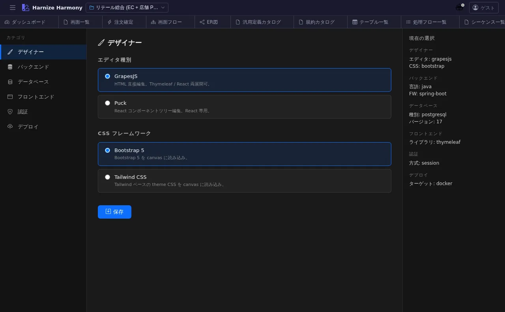

技術スタック選定
対象画面:
TechStackView(frontend/src/components/tech-stack/TechStackView.tsx) ルート:/w/:wsId/project/tech-stack種別: シングルトンタブ
概要
プロジェクトが生成するコードの 技術スタック を選定する画面。backend (Spring Boot / NestJS 等) / frontend (Next.js / React / Thymeleaf 等) / DB (PostgreSQL / MySQL / Oracle 等) / DDL 管理ツール (Flyway / Liquibase / Prisma 等) / CSS framework (Bootstrap / Tailwind) などを project 単位で設定し、/generate-code スキルがこの設定に基づき適切な雛形を生成する。
到達経路
- HeaderMenu → 「プロジェクト」 → 「技術スタック」
- 直接 URL:
/w/<wsId>/project/tech-stack
画面構成

主要エリア
- ヘッダー — タイトル「技術スタック」 + 保存
- backend グループ — language / framework / persistence / migration
- frontend グループ — framework / state management / CSS / designer kind (GrapesJS / Puck)
- DB / インフラ — DB engine / connection / 監視
- AI / 開発支援 — Codex / Claude Code 設定 (AI 連携時の prompt 等)
主要操作
| 操作 | 手段 | 結果 |
|---|---|---|
| stack 選択 | 各カテゴリの dropdown | harmony.json の techStack に保存 |
| 排他制約の警告 | 自動 | 例: backend=Spring + persistence=Prisma 等の不整合組合せに warning |
| 保存 | 「保存」 / Ctrl+S | harmony.json 更新 |
| recommended preset | 「推奨組合せ」 | 典型 stack (例: nestjs+nextjs+prisma+postgresql) をワンクリック適用 |
データ前提
- 新規 project: 全フィールド空 → 「推奨組合せ」から開始すると速い
- 意味のある状態: retail は Spring Boot + Thymeleaf + Flyway + Postgres + Bootstrap の典型業務系 stack
関連仕様書
harmony.jsonschema のtechStackfield —docs/spec/sample-project-structure.mddocs/spec/code-generation.md— techStack の使われ方docs/user-guide/generate-code-workflow.md— 生成ワークフロー
関連 skill
/generate-code <flowId|screenId>— techStack に基づき backend / frontend code を生成/generate-tests <flowId|screenId>— techStack に基づき test code を生成
既知の制約・注意
- techStack は 後から変更可だが、既に生成済 code との整合を取るには
/generate-codeを再実行する必要 - 推奨組合せに無い stack 組合せ (例: Spring + Prisma) を選ぶ場合は 手動補完が必要な箇所が出る可能性あり
- AI 連携設定の codex は
.codex/config.tomlと project レベル設定の合成